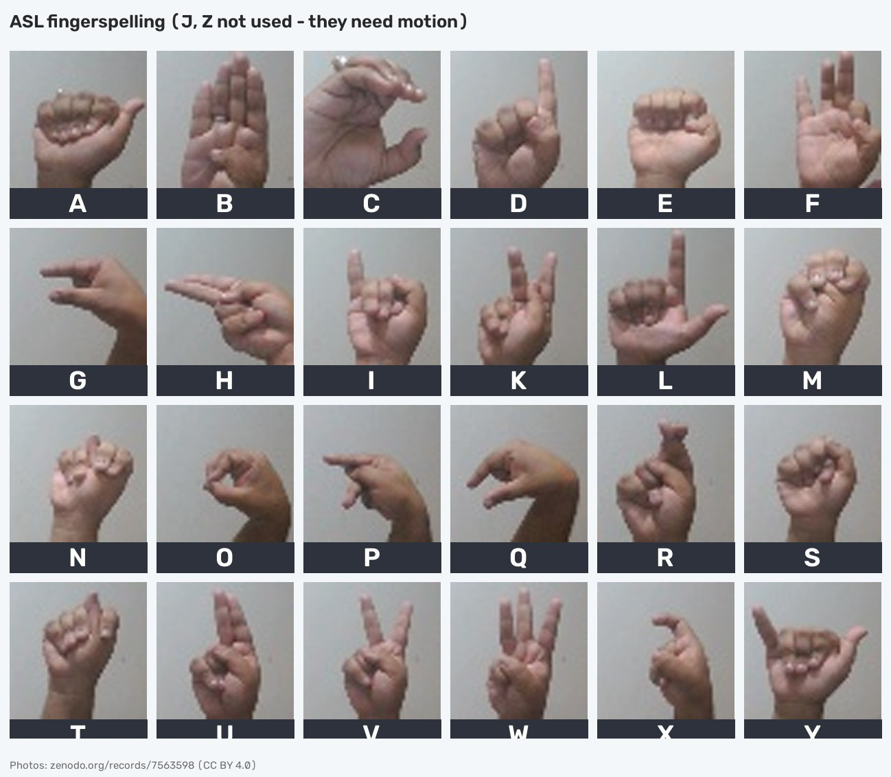

עשו את הסימנים לפי הסדר מול המצלמה. כל סימן צריך להחזיק כחצי שנייה.
סט מוכן: שפת סימנים אמריקאית (ASL)
24 אותיות שכבר אומנו מתמונות אמיתיות. אפשר לסמן ביד ימין או שמאל. מומלץ להוסיף מעליהן הקלטה של הידיים שלך (בסעיף 1) לאותיות שבמילה, כי ככה הזיהוי הכי מדויק.
איך נראית כל אות?

1. הקלטת סימנים
כתבו שם לסימן (למשל אות או מילה), לחצו "הקלט" והחזיקו את הסימן מול המצלמה. כדאי להקליט כל סימן 2–3 פעמים, בזוויות ומרחקים קצת שונים.
2. המילה הסודית
שמות הסימנים לפי הסדר, מופרדים בפסיקים. עם אותיות ASL אפשר לכתוב גם בלי פסיקים: BOX
3. הגדרות
4. גיבוי
האימון נשמר בדפדפן הזה בלבד. לפני ההצגה בבית הספר — שמרו קובץ גיבוי וטענו אותו במחשב שם.